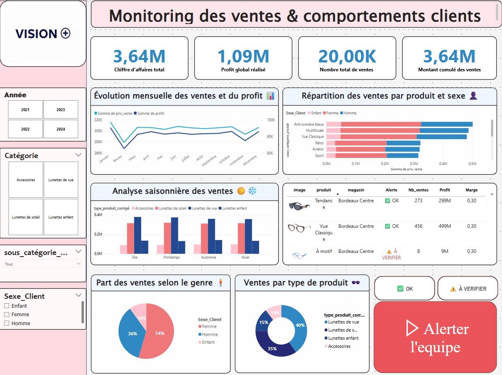

Vision+ – Dashboard Analyse Vente & Retours Produits

🎯 Objectif :
Offrir une vue consolidée et interactive de la performance commerciale, des comportements d’achat
et des retours produits. Ce dashboard aide les équipes marketing et direction à piloter les ventes,
détecter les anomalies et anticiper les retours.
🚀 Particularité :
Design moderne en thème sombre, avec segmentation par saison, genre et catégorie, permettant
d’identifier les comportements des clients. Une alerte visuelle met en avant les produits les plus
problématiques, réduisant le temps d'analyse de 50 %.
📊 Indicateurs & Analyses :
- Évolution des ventes par mois
- Produits les plus vendus vs les plus retournés
- Analyse Homme / Femme / Enfants
- Saisonnalité et périodes fortes
- Taux de retour global & par sous-catégorie
- Profitabilité & marges
- Identification des clients fidèles et profils à risque
🛠️ Outils & Compétences :
Power BI, DAX, Power Query, Design UX/UI, segmentation, choix des couleurs, optimisation des filtres,
storytelling data, production d'insights métier.